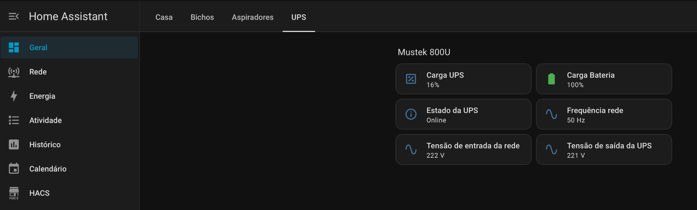

O projeto
O Home Assistant é utilizado como ponto central para reunir estados, dashboards e automações do ambiente doméstico e de laboratório. O objetivo é ter uma vista simples do que está ligado, acompanhar alguns consumos e testar integrações locais com dispositivos e serviços próprios.

O que está a ser testado
Áreas principais
- Controlo básico de iluminação e tomadas.
- Integração de sensores e estados do ambiente.
- Comunicação local com MQTT e dispositivos Zigbee compatíveis.
- Organização de dashboards por área, como casa, aspiradores e UPS.
- Monitorização de alguns equipamentos para consulta rápida.
Exemplos visuais

Abordagem
- Criar dashboards simples, fáceis de consultar no dia a dia.
- Integrar primeiro as funções essenciais e só depois acrescentar detalhe.
- Usar a plataforma como apoio à monitorização do laboratório e de alguns equipamentos domésticos.
As capturas apresentadas servem como exemplo visual do ambiente em utilização, sem entrar em documentação demasiado detalhada.